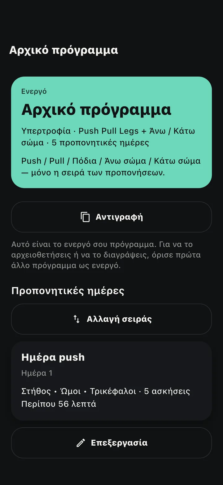
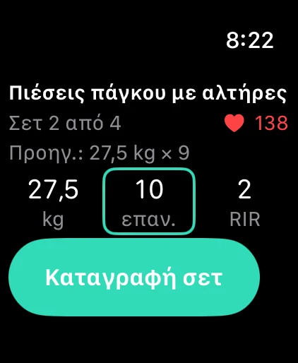
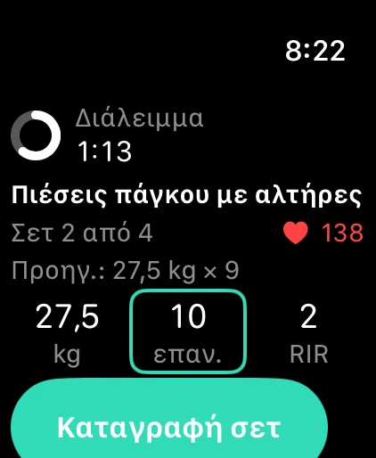
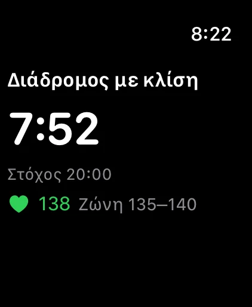
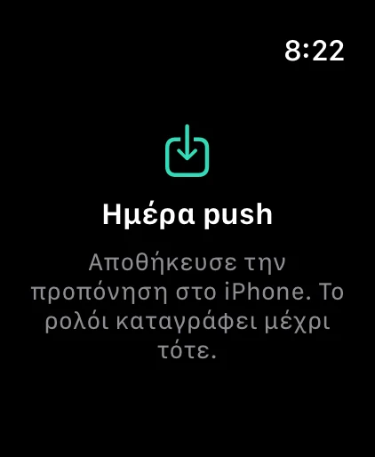

Προπονήσου με βάση την έρευνα.
Η εφαρμογή προπόνησης που έφτιαξε ένας φυσικοθεραπευτής που γυμνάζεται. Κάθε κανόνας της έχει την πηγή του.
Δωρεάν, χωρίς διαφημίσεις. Σε iPhone μέσω TestFlight της Apple, σε Android μέσω Google Play.
Ένα σετ, το διάλειμμα, το επόμενο σετ. Πάτα «Αποθήκευση σετ» να το δοκιμάσεις.
Δωρεάν, χωρίς διαφημίσεις. Σε iPhone μέσω TestFlight της Apple, σε Android μέσω Google Play.
- Από φυσικοθεραπευτή
- Κάθε κανόνας με την πηγή του
- Δωρεάν. Χωρίς διαφημίσεις, χωρίς παρακολούθηση
Η προπόνηση είναι ένα μεγάλο ταξίδι. Θέλει οργάνωση, αφοσίωση και επιμονή: στο πλάνο, στη διατροφή, στον ύπνο. Δεν συγκρίνεσαι με κανέναν. Μόνο με τον χθεσινό σου εαυτό.
Ένας προπονητής που διαβάζει την προπόνησή σου, όχι τη διάθεσή σου.

Πρόγραμμα φτιαγμένο από την έρευνα
- Εβδομαδιαία σετ ανά μυ μέσα στα δημοσιευμένα εύρη, και λιγότερα όταν ξεκινάς.
- Οι βαριές ασκήσεις ανοίγουν τη μέρα. Μια προπόνηση μένει έως 24 σετ εργασίας όταν προπονείσαι τέσσερις ή περισσότερες μέρες την εβδομάδα.
- Κάθε μέρα δείχνει πόσο πραγματικά διαρκεί, μαζί με τα σετ ζεστάματος.




Άσε το κινητό στην τσάντα.
Κατάγραψε το σετ από τον καρπό σου. Το ρολόι σε ειδοποιεί όταν τελειώσει το διάλειμμα.
- Σετ. Τα κιλά και οι επαναλήψεις έρχονται συμπληρωμένα από την προηγούμενη φορά. Γύρνα το Crown, πάτα Καταγραφή σετ.
- Διάλειμμα. Ο κύκλος μετράει αντίστροφα και ο καρπός σου δονείται στο μηδέν.
- Cardio. Ο χρόνος απέναντι στον στόχο σου, και οι παλμοί απέναντι στη ζώνη τους.
- Τέλος. Το ρολόι συνεχίζει να καταγράφει μέχρι να αποθηκεύσεις την προπόνηση στο iPhone.
Το κινητό μακριά; Τα σετ κρατιούνται στο ρολόι και παραδίδονται όταν ξαναβρεθεί κοντά. Το Apple Watch είναι δωρεάν μέχρι να έρθει το Pro.
Πόσα σετ την εβδομάδα;
Περισσότερα εβδομαδιαία σετ χτίζουν περισσότερο μυ, αλλά κάθε βήμα κοστίζει περισσότερο από το προηγούμενο. Σύρε για να δεις τι βρήκαν 67 μελέτες.
Το Kompsatos ορίζει τα εβδομαδιαία σετ ανά μυ μέσα σε αυτή τη σχέση δόσης–απόκρισης, και λιγότερα όταν ξεκινάς.
Πώς διαβάζονται αυτοί οι αριθμοί
Μέσοι όροι μελετών· κάθε άνθρωπος διαφέρει. Ένα σετ που γυμνάζει έμμεσα έναν μυ μετρά ως μισό. Ένα ανιχνεύσιμο βήμα είναι αύξηση 2,05% στο μέγεθος του μυός, η μικρότερη διαφορά που μπορούσε να ξεχωρίσει η ανάλυση. Η καμπύλη ενώνει τα όρια των βαθμίδων του Πίνακα 3. Λίγες μελέτες ξεπερνούν τα 25 σετ περίπου, άρα εκεί οι εκτιμήσεις είναι λιγότερο βέβαιες.
Pelland JC και συν. Sports Med 2026;56(2):481–505. Μετα-παλινδρόμηση, 67 μελέτες, 2.058 συμμετέχοντες. doi:10.1007/s40279-025-02344-w
Έναν δίσκο τη φορά.
Τι κάνει η εφαρμογή για σένα στη διαδρομή.
- Μέρα 1Η πρώτη σου καταγραφή είναι το σημείο εκκίνησης, όχι ρεκόρ.
- Κάθε προπόνησηΤο επόμενο φορτίο βγαίνει από όσα έκανες, όχι από ένα πρότυπο.
- Κάθε εβδομάδαΗ εβδομαδιαία ανασκόπηση συνοψίζει τι έκανες σε σχέση με το πλάνο σου.
- Μήνα με τον μήναΤα επίπεδα και οι τίτλοι έρχονται από το να τηρείς το πλάνο σου, ποτέ από το να κάνεις περισσότερα από όσα ζητά.
- Έναν χρόνο μετάΓραφήματα για τις ασκήσεις σου και ένα περίγραμμα σώματος από τις δικές σου μετρήσεις. Η μόνη σύγκριση είναι με εσένα.
Γεια, είμαι ο Δημήτρης.
Είμαι φυσικοθεραπευτής και γυμνάζομαι. Έφτιαξα το Kompsatos για να διορθώσω τα λάθη που κάναμε για χρόνια εγώ και οι αθλητές γύρω μου. Μοιράζομαι κάθε βήμα της κατασκευής, την έρευνα πίσω από κάθε απόφαση και τη δική μου προπόνηση με την εφαρμογή. Το όνομα προέρχεται από τον Κόμψατο, ποτάμι της Θράκης.
Ο προπονητής είναι δωρεάν. Πάντα.
Η καθοδήγηση στην προπόνηση δεν πρέπει να είναι ποτέ πίσω από συνδρομή. Ποτέ διαφημίσεις, και τα δεδομένα σου δεν πωλούνται ποτέ.
Founding Athletes. Όσοι δοκιμάζουν τη beta και μένουν ενεργοί 4 εβδομάδες ή περισσότερο παίρνουν 12 μήνες Pro δωρεάν όταν έρθει, και έναν τίτλο που δεν αγοράζεται ποτέ.
Όσα ρωτάτε.
Είναι δωρεάν το Kompsatos;
Ναι. Ο προπονητής είναι δωρεάν, πάντα: καταγραφή, προγράμματα, προτάσεις φορτίου, ρεκόρ, οδηγίες, εξαγωγή των δεδομένων σου και το χρονόμετρο διαλείμματος στην οθόνη κλειδώματος. Σχεδιάζεται μια πληρωμένη έκδοση Pro για επιπλέον λειτουργίες, όπως το πλήρες ιστορικό γραφημάτων (το δωρεάν δείχνει 3 μήνες), το Apple Watch, τα widgets και τα θέματα, με σχεδιαζόμενη τιμή 3,99 € τον μήνα ή 29,99 € τον χρόνο. Οι τιμές μπορεί να αλλάξουν πριν την κυκλοφορία.
Πότε παίρνω πρόσβαση στη beta;
Αμέσως. Σε iPhone, άνοιξε τον σύνδεσμο της beta, εγκατάστησε την εφαρμογή TestFlight της Apple αν σου τη ζητήσει και πάτα Install. Σε Android θέλει δύο βήματα, στη σελίδα για Android. Οι θέσεις στο iPhone είναι περιορισμένες· αν η beta είναι γεμάτη, γράψου στη λίστα αναμονής και θα σε ειδοποιήσουμε όταν ανοίξουν θέσεις.
Χρειάζομαι λογαριασμό και πού πάνε τα δεδομένα μου;
Δεν χρειάζεσαι λογαριασμό. Ως επισκέπτης όλα μένουν στο κινητό σου. Με λογαριασμό, και μόνο με τη ρητή συγκατάθεσή σου, οι προπονήσεις και οι ρυθμίσεις σου αποθηκεύονται σε βάση δεδομένων στη Φρανκφούρτη της Γερμανίας, για να τις επαναφέρεις σε άλλο κινητό. Χωρίς διαφημίσεις, χωρίς analytics, και τα δεδομένα σου δεν πωλούνται ποτέ. Λεπτομέρειες στην πολιτική απορρήτου.
Δουλεύει χωρίς Apple Watch;
Ναι. Όλα δουλεύουν μόνο με το κινητό, σε iPhone και σε Android. Το ρολόι είναι επιπλέον, για καταγραφή από τον καρπό.
Είναι ιατρική συμβουλή;
Όχι. Το Kompsatos δίνει πληροφορίες προπόνησης βασισμένες σε δημοσιευμένη έρευνα. Αν έχεις πόνο, τραυματισμό ή κάποια πάθηση, μίλα με έναν κατάλληλο επαγγελματία υγείας.
Ξεκίνα από τη σημερινή προπόνηση.
Δωρεάν, σε iPhone και Android.